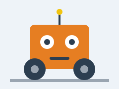

O Faísca está pronto para o torneio
Depois de seis semanas de trabalho, o robô do clube já anda sozinho e para antes de bater numa parede.

Clube de Robótica
Construímos e programamos pequenos robôs, na sala de informática. Não é preciso saber nada antes de entrar: aprende-se a fazer.
Para saberes quando treinamos, carrega no calendário:
Depois de seis semanas de trabalho, o robô do clube já anda sozinho e para antes de bater numa parede.
